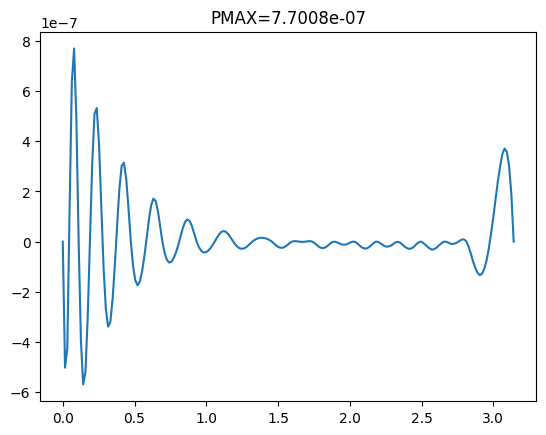
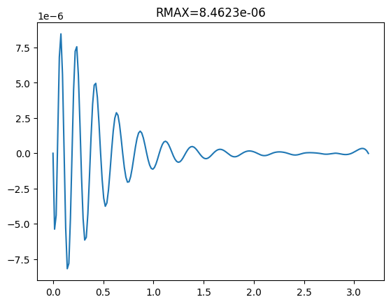

deepmax.mult basis#
# global imports
import numpy as np
import matplotlib.pyplot as plt
from scipy.optimize import root
from deepmax.cooker import P,R,Zcooker,Z_N,set_n
from deepmax.empirical import Ye
from deepmax.plot import grid,contours
# using mult basis
from deepmax.mult import wchiC
set_n(*wchiC)
N=26
Z0=Z_N(Ye,N,alpha=1.325)
Zc=Zcooker(Z0)
Hc=-Zc[-1].imag
Hc/2/np.pi
np.float64(0.14106354323233847)
plt.plot(Zc.real,Zc.imag,'ro')
[<matplotlib.lines.Line2D at 0x7f70ffae10>]
from scipy.interpolate import CubicSpline as CS
YCS=CS(Zc.real,Zc.imag)
YCS(np.pi)
array(-0.88632838)
Cc=wchiC[-1](Zc)
Cc
array([ 1.09228492e+00, -7.17158195e-02, -9.79169518e-03, -3.62257052e-03,
-1.87648939e-03, -1.13493678e-03, -7.54226020e-04, -5.33796514e-04,
-3.96909154e-04, -3.01606656e-04, -2.47728883e-04, -1.76728686e-04,
-2.00139074e-04, -1.32912855e-05, -5.18578951e-04, 1.35118607e-03,
-5.48211697e-03, 1.89514893e-02, -5.05728337e-02, 6.16515307e-02,
1.42113222e-01, -8.46554152e-01, 1.85588370e+00, -2.20302909e+00,
1.39045473e+00, -3.65768076e-01])
X200=np.linspace(0,np.pi,200)
plt.plot(X200,P(X200+1j*YCS(X200),Cc))
PMAX=max(abs(P(X200+1j*YCS(X200),Cc)))
plt.title(f'PMAX={PMAX:0.4e}')
plt.show()

plt.plot(X200,R(X200+1j*YCS(X200),Cc))
RMAX=max(abs(R(X200+1j*YCS(X200),Cc)))
plt.title(f'RMAX={RMAX:0.4e}')
plt.show()

A=np.linspace(1.2,1.4)
ZA=[Zcooker(Z_N(Ye,N,alpha=a)) for a in A]
def PRMAX(Zc):
X200=np.linspace(0,np.pi,200)
YCS=CS(Zc.real,Zc.imag)
Cc=wchiC[-1](Zc)
PMAX=max(abs(P(X200+1j*YCS(X200),Cc)))
RMAX=max(abs(R(X200+1j*YCS(X200),Cc)))
return PMAX,RMAX
PRMA=np.array([PRMAX(Zc) for Zc in ZA]).T
plt.plot(A,PRMA[0])
[<matplotlib.lines.Line2D at 0x7f6e69a850>]
plt.plot(A,PRMA[1])
[<matplotlib.lines.Line2D at 0x7f6e8aae10>]
NN=np.arange(20,29)
ZA=[Zcooker(Z_N(Ye,N,alpha=1.325)) for N in NN]
PRMA=np.array([PRMAX(Zc) for Zc in ZA]).T
plt.plot(NN,PRMA[0])
[<matplotlib.lines.Line2D at 0x7f6e92a8d0>]
plt.plot(NN,PRMA[1])
[<matplotlib.lines.Line2D at 0x7f6e71a850>]
ZA[-1][-1]/2/np.pi
np.complex128(0.5-0.14106353975214306j)